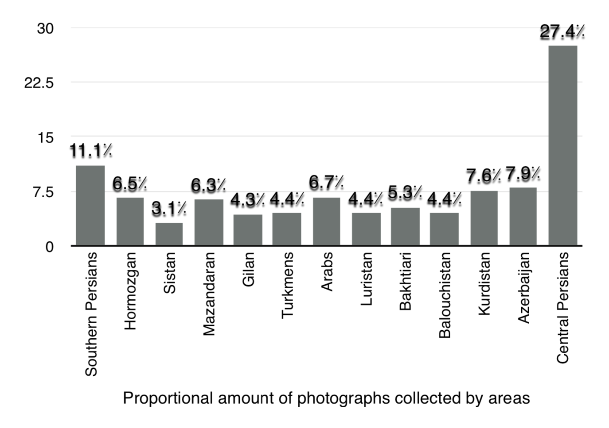
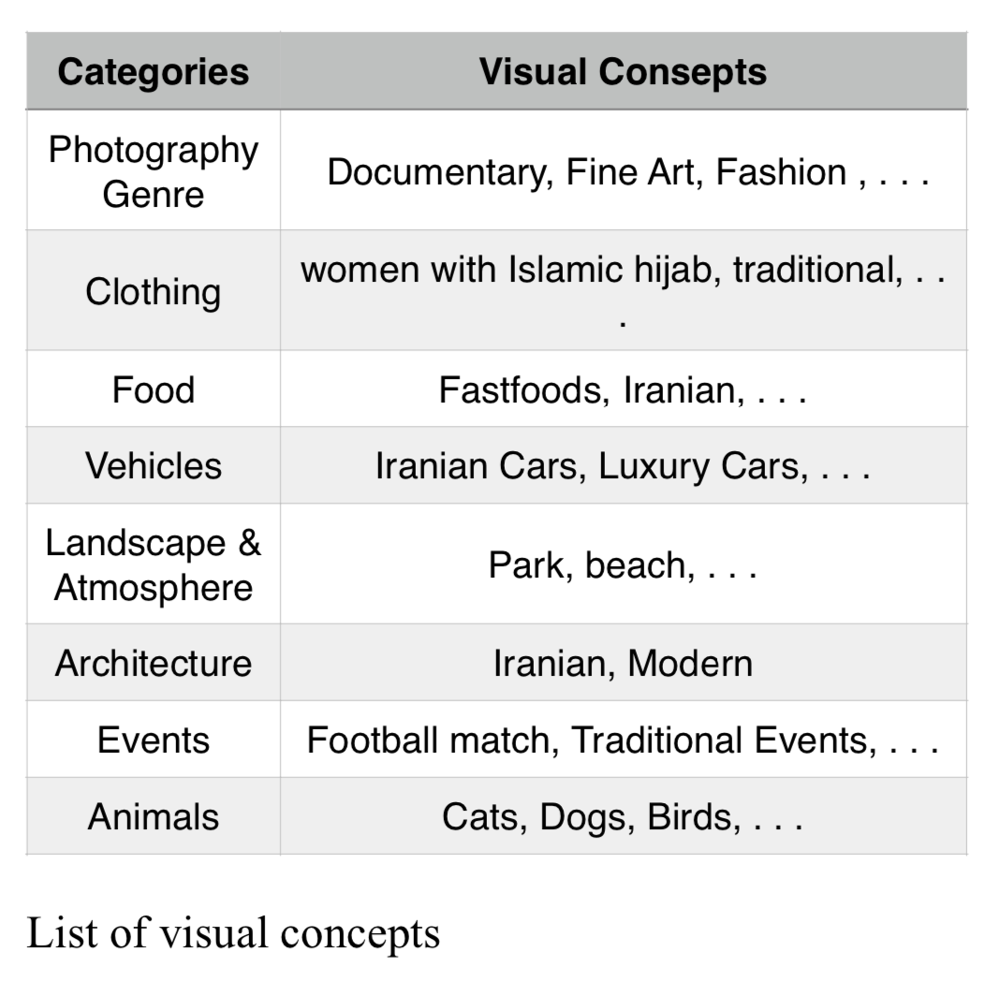
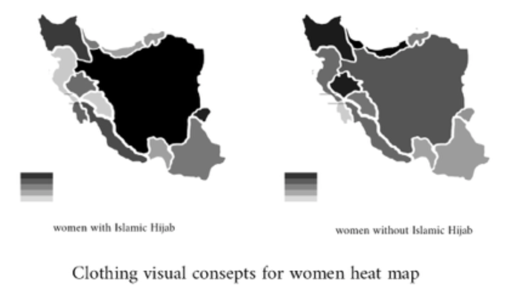
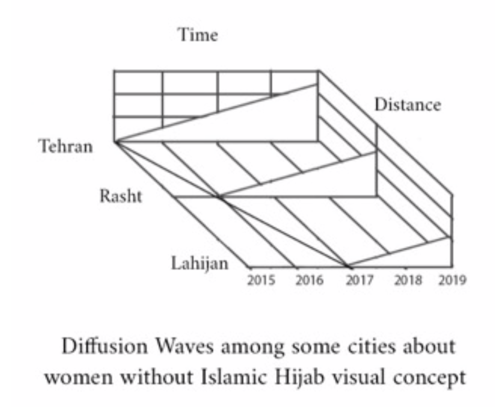
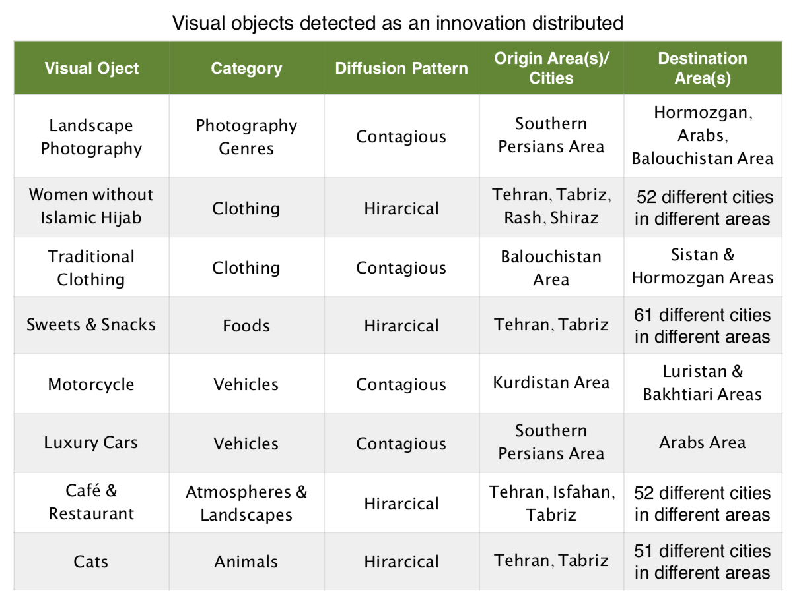

Mehdi Robati Shirzad


Greetings! I'm Mehdi
Photographer, Green Activist, and in love with visual culture of my vicinity!
I was raised in Isfahan, a city which is often considered as the cultural capital of Iran. Soon in my early childhood, my family found out about my passion for visual arts where they would always find me binge watching the TV commercials, or gazing at the advertisement billboards all across the city. After a while, they encouraged me to get more involved with my passion and start learning drawing skills in a local drawing class. Later on during my teenagehood, I became obsessed with blending realism to my imaginative ideas, and that was where I was drawn to the art of Photography. I spent so much time throughout my high school, looking for the most breathtaking landscapes in the environment I was living in at the time, so I could capture that scene through the lenses of my camera.
To revive my passion for visual arts in an academic setting, I decided to pursue a Masters of Fine Arts in Photography at Soore University. Soore University is one of the best academic centers which is solely focused on art majors. Soon I became one of the Soore’s Photographers’ Society member, through which I met other artists and we ran some collaborative art projects together. These projects were mostly concentrated on the iranian contemporary visual culture and visual anthropology of middle east.
The idea behind these projects became an starting point for my thesis. I decided to research about cultural diffusion and iranian photography, specifically on Instagram platform, which is the dominant content sharing platform between the Iranian people. The research claims that the representation of spatial diffusion or cultural diffusion in the contemporary visual culture of Iran is highly conspicuous. By doing content analysis on Iranian Instagram photographs, this report tries to inspect the spatial diffusion of innovations theory developed by the notable Swedish geographer Torsten Hägerstrand about several visual elements in Iranian photos shared in Instagram as the most popular social media in this country. The visual data in this work collected over 44000 photographs from 90 cities in a five-year period (2015-2019). I managed to finish my MFA studies with straight A’s and considerable praise from the academic faculty for my thesis as a work which “shed new beams of light on contemporary visual culture of Iran”.
- Iranian Contemporary Visual Culture
- Iranian Photography History
- Persian & Middle Eastern popular Culture
- Visual Anthropology of Middle East
My Interests :
This is the list of my most notable artworks and projects. (Complete list in CV).

Cultural Diffusion and Iranian Instagram Photography
Mehdi Robati Shirzad - MFA Thesis - Soore University
The research claims that the representation of spatial diffusion or cultural diffusion in the contemporary visual culture of Iran is conspicuous. By doing content analysis on Iranian Instagram photographs, this report tries to inspect the spatial diffusion of innovations theory developed by the notable Swedish geographer Torsten Hägerstrand about several visual elements in Iranian photos shared in Instagram as the most popular social media in this country. The visual data in this work collected over 44000 photographs from 90 cities in a five-year period. (2015-2019)
Iran is geographically divided into 13 different cultural areas according to ethnics, languages, and religion in this research work. This report identifies the list of visual concepts for classifying photos collected from various cities in these areas. After tagging and categorizing pictures in the content analysis process, several new patio-temporal data, pie charts, and heat maps were achieved.
In these unique pieces of information, spatial diffusion of some visual concepts in the two most essential patterns, hierarchical and contagious, among numbers of cities and areas was detected.
In conclusion, this work recognizes that some big cities like Tehran and Tabriz originate some innovations hierarchically distributed to other smaller towns. For instance, existing women without Islamic hijab or cats visual elements in Instagram photos are recognized as these some innovations. Also, this work found some contagious diffusion paths among some areas, such as the distribution of motorcycle visual objects from the Kurdistan area to its adjacent cultural areas.
  